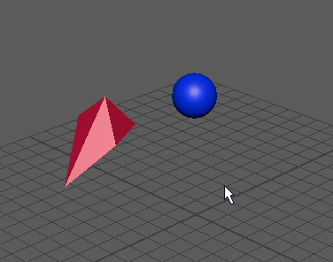

目标约束可约束某个对象的方向，使该对象指向其他对象。目标约束的典型使用包括使灯光或摄影机对准某个对象或一组对象。有关目标约束的详细信息，请参见目标约束。
创建目标约束时，可以首先设置创建选项，然后创建目标约束，也可以立即创建约束和当前创建选项。
若要约束对象对准局部旋转正 X 轴方向，使用默认的约束选项即可。
创建目标约束
- 选择一个或多个目标对象，然后选择要约束的对象。
- 在“装备”(Rigging)或“动画”(Animation) 菜单集中选择“约束 > 目标”(Constrain > Aim)。

将目标约束添加到动画层
- 选择一个或多个目标对象，然后选择要约束的对象。
- 选择“约束 > 目标”(Constrain > Aim) >
 。
。
- 在“目标约束选项”(Aim Constraint Options)窗口中，设置要约束的选项。从“动画层”(Animation Layer)下拉菜单中，选择要添加约束的动画层。
提示：
将约束添加到动画层时，请启用“保持偏移”(Maintain Offset)，使受约束对象不会意外移动。
现在，约束动画包含在指定的动画层中，并有助于在场景中生成动画。